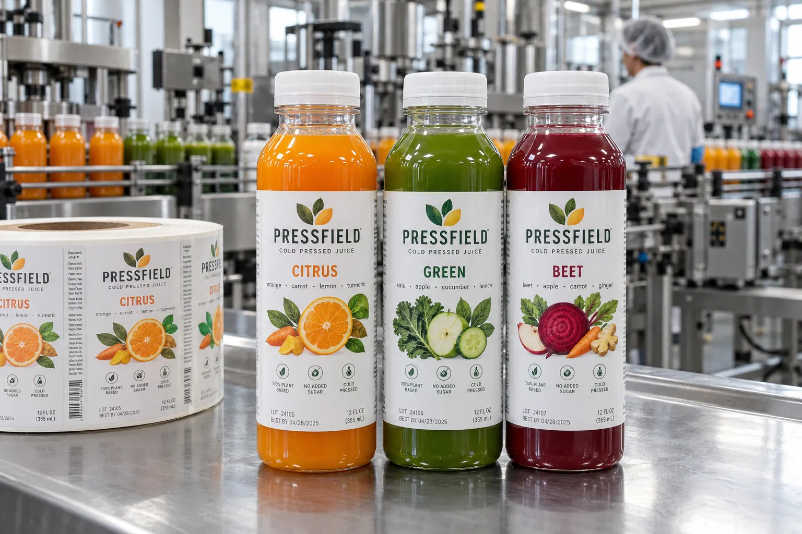

The process map comes before the material swatch
When a buyer says 'HPP juice,' I ask one question before showing film samples: is the drink processed in the sealed bottle or in bulk before filling? Hiperbaric describes both in-pack and in-bulk HPP routes. In-pack equipment processes the final sealed package; in-bulk equipment treats the beverage before it is filled. That difference determines whether a printed label might be exposed to processing and how the finished bottle moves through the line.
I would never sell a roll on the sentence 'the label is waterproof.' Water resistance says little about how a specific face, ink, finish and adhesive behave through a customer's actual equipment and handling sequence. If the co-packer labels after in-pack HPP, the test shifts to the post-process bottle surface and temperature. If the label is applied first, the complete construction needs a process trial.
Two composite juice launches
Imagine a small brand with three PET juice flavors using an in-pack co-packer. Its design team wants one clear label shape and different artwork. The line manager says bottles are packed, processed, dried and then labeled. I would check the drying point and the temperature of real bottles at the labeler, not assume that a dry bottle in the artwork studio represents the line.
Now imagine a second, composite brand using an in-bulk process and filling later. It can choose a different package route, but the label still has to survive chilled distribution and hands pulling bottles from a wet cooler. The process choice solves one question; it does not approve every label stock for cold use.
Approve the bottle after the whole route
Request filled bottle samples from the intended production line. Record whether labels are applied before or after processing, bottle material, application temperature, surface dryness and handling before case packing. Then inspect edge lift, ink rub, legibility of flavor and lot information, and barcode scans after the normal cold-chain cycle. Process validation and any shelf-life or safety claim belong to the beverage producer and co-packer, not to a label artwork proof.
| Decision | Evidence to request |
|---|---|
| HPP route | In-pack or in-bulk process map |
| Label timing | Actual point of application and bottle dryness |
| Materials | Finished bottle trial, not a loose swatch |
| Dispatch | Cold-handling and barcode check |
Our buying view
Buy for the route, not the acronym
I would rather delay the label quote for one process-map call than recommend an expensive film on the wrong assumption. 'HPP' describes the beverage treatment; it does not specify when your label touches the bottle.
What to send with the inquiry
- Co-packer process route and label application point.
- Filled bottle, closure, artwork and planned SKU count.
- Application temperature, drying and chilled storage conditions.
- Roll direction, core, quantity and variable-code method.
Compare cold-brew bottle condensation and application versus service temperature before approving a chilled-bottle construction.
Frequently asked questions
Can a labeled juice bottle go through HPP?
Only after the exact bottle, label construction and in-pack HPP cycle have been trialed together. In-bulk HPP has a different sequence.
Should I label before or after HPP?
Start with the co-packer process map. In-pack and in-bulk lines differ; do not choose a sequence from the label sample alone.
Does a waterproof face solve condensation?
Not by itself. The adhesive, bottle condition at application and printed finish also need checking.
Related buyer guides
Review your label specification
Send package photos, label dimensions, material details, quantity and application conditions. Include good and failed samples where possible so the discussion starts with evidence.